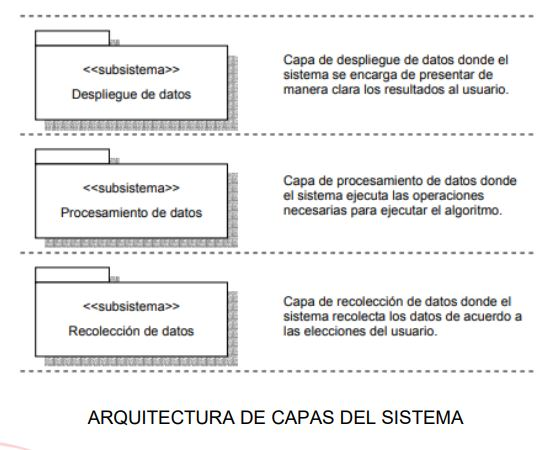
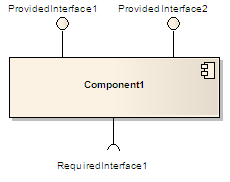

Identificación de los subsistemas
1. La descomposición en subsistemas se revisa en forma constante siempre que se tratan temas nuevos: los subsistemas se combinan en un subsistema, un subsistemas complejo se divide en partes y se añaden algunos subsistemas para que se encarguen de nueva funcionalidad
2. La descomposición en subsistemas inicial debe derivarse de los requerimientos funcionales
3. Los subsistemas también son medios adecuados para identificar las partes del sistema que debe desarrollar de modo independiente un equipo separado.
4. El subsistema de diseño se utiliza para encapsular las colaboraciones de modo que los clientes del subsistema puedan ignorar por completo el diseño interno del subsistema, incluso cuando utilicen los servicios que ofrece el subsistema
Utilzación de los subsistemas
1. Se pueden ordenar, configurar o entregar independientemente
2. Se puede desarrollar independientemente, siempre que las interfaces no se cambien
3. Se pueden desplegar independientemente a través de un conjunto de nodos computacionales distribuidos
4. Se pueden cambiar independientemente sin romper otros componentes de los sistemas
Ejemplo de subsistemas

SUBSISTEMA DE RECOLECCIÓN DE DATOS
Es el encargado de la interfaz principal y provee de acceso a los métodos implementados en la herramienta.
SUBSISTEMA DE PROCESAMIENTO DE DATOS
Responde a las llamadas hechas al método hibrido MST-20PT
SUBSISTEMA DE DESPLIEGUE DE DATOS
pSu función básica es comunicar al usuario los resultados de la ejecución del método hibrido.Componente de software
Un sistema esta formado por subsistemas. Cada subsistema corresponde una serie de opciones, cada una de las cuales ejecuta un programa especifico. Cada programa realiza un requerimiento o un conjunto de ellos.
Diagramas de componente
Los Diagramas de Componentes ilustran las piezas del software, controladores embebidos, etc. que conformarán un sistema. Un diagrama de Componentes tiene un nivel más alto de abstracción que un diagrama de clase – usualmente un componente se implementa por una o más clases (u objetos) en tiempo de ejecución. Estos son bloques de construcción, como eventualmente un componente puede comprender una gran porción de un sistema.
